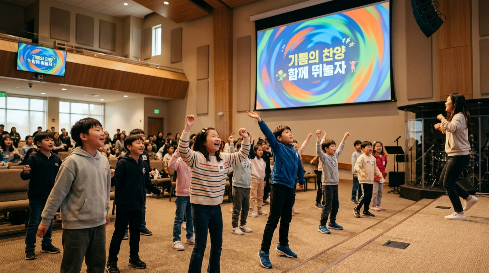
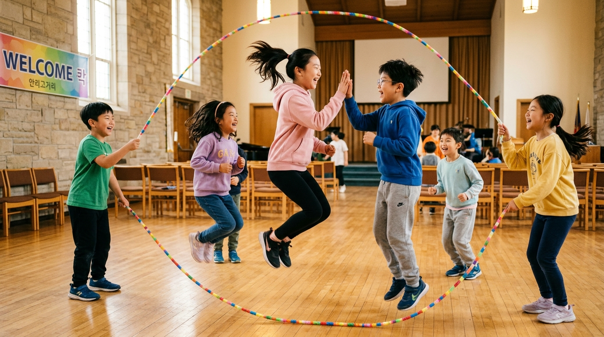

🔥 오늘의 POB 미션 스포일러!
등교한 탐험가 친구들은 지금 중앙 롤매트에서 자유롭게 미리 연습해보세요!
오늘의 체육 미션: 2인 1조 줄넘기 60개 성공하기!
🎒 1. 입구에서 POB 탐험가 단원 조끼를 착용하세요!
🪢 2. 짝꿍과 함께 중앙 롤매트에서 줄넘기 60개를 미리 연습해보세요!
🏆 3. 미션 성공 시 스크린의 황금빛 성경 구절이 열립니다!
예배를 여는 오프닝 카운트다운
몸과 마음을 다스리고 하나님께 드리는 예배의 자리로 들어갑니다
"여호와는 그의 성전에 계시니 온 땅은 그 앞에서 잠잠할지니라 (하박국 2:20)"
✝️ 우리가 믿는 것을 함께 고백합니다
온 몸으로 선언하는 신앙 고백 — 다 함께 큰 소리로 읽어요
전능하사 천지를 만드신 하나님 아버지를 내가 믿사오며
그 외아들 우리 주 예수 그리스도를 믿사오니
이는 성령으로 잉태하사 동정녀 마리아에게 나시고
본디오 빌라도에게 고난을 받으사 십자가에 못 박혀 죽으시고
장사한 지 사흘 만에 죽은 자 가운데서 다시 살아나시며
하늘에 오르사 전능하신 하나님 우편에 앉아 계시다가
저리로서 산 자와 죽은 자를 심판하러 오시리라
성령을 믿사오며 거룩한 공회와 성도가 서로 교통하는 것과
죄를 사하여 주시는 것과 몸이 다시 사는 것과
영원히 사는 것을 믿사옵나이다. 아멘.
비트 찬양 2곡 & 7단계 으뜸 체조
스크린 속 캐릭터 동작에 맞춰 온몸으로 하나님을 찬양합니다
2. 감사 - 건강 주신 주님께 감사해요
3. 경청 - 말씀 들을 준비를 해요
4. 동행 - 주님과 함께 걸어가요
5. 절제 - 내 마음을 다스려요
6. 섬김 - 따뜻하게 이웃을 도와요
7. 승리 - 믿음으로 하루를 승리해요!

오늘의 성경 본문: 요한복음 16장 13절
입체 오디오 성경으로 말씀의 목소리에 깊이 몰입합니다
"그러나 진리의 성령이 오시면 그가 너희를 모든 진리 가운데로 인도하시리니
그가 스스로 말하지 않고 오직 들은 것을 말하며 장래 일을 너희에게 알리시리라"
- 요한복음 16장 13절 말씀 -
유년부와 초등부가 하나 되는 화면 이원화
고학년 형이 저학년 동생의 성경책을 짚어주며 돋보기 퀴즈를 풉니다
Q: 성경 본문에서 '보혜사' 단어를 찾아 동그라미를 쳐보세요!
Q: 예수님이 오셔서 우리를 진리로 이끄신다는 약속의 의미는 무엇일까요?
줄넘기 60회 성공! 황금 말씀 해금
합산 60회를 채우는 순간 어둡던 화면이 열리고 큰 소리로 암송합니다!
2인 1조 줄넘기 60회 달성!
동생 20개 + 형 40개 = 전원 미션 성공!
성공하는 순간 스크린의 어둠이 걷히며 황금빛 요한복음 16:13 말씀이 열립니다!

성령님과 함께 이번 주 내가 할 것은?
하나님이 먼저 하셨기 때문에 — 나도 할 수 있어요
"성령님이 나와 함께 계세요"라고
한 번 말해볼 수 있을까요?
이번 주 어떤 구체적인 행동을
한 가지 결단해볼까요?
📖 이번 주 암송 구절
다 함께 3번 반복해요 — 몸을 흔들며 리듬으로 외워봐요!
"그러나 진리의 성령이 오시면
그가 너희를 모든 진리 가운데로 인도하시리니"
— 요한복음 16장 13절 —
네이버 밴드 Best 쇼츠 & 30초 스토리텔링
주중 집에서 찍어 올린 30초 영상을 전 교인과 함께 축하하고 뱃지를 수여합니다
30초 스토리텔링 수여식
단상에 올라온 아이가 부모님과 선생님 앞에서 "이 뱃지는 성령님이 불꽃으로 오신 이야기예요!"라고 30초 동안 설명 후 조끼 가슴에 와펜 뱃지를 부착합니다!
🙏 예수님이 가르쳐 주신 기도로 예배를 닫습니다
다 함께 눈을 감고 — 천천히, 마음을 담아
하늘에 계신 우리 아버지여
이름이 거룩히 여김을 받으시오며
나라가 임하시오며 뜻이 하늘에서 이루어진 것 같이
땅에서도 이루어지이다
오늘 우리에게 일용할 양식을 주시옵고
우리가 우리에게 죄 지은 자를 사하여 준 것 같이
우리 죄를 사하여 주시옵고
우리를 시험에 들게 하지 마시옵고
다만 악에서 구하시옵소서
나라와 권세와 영광이 아버지께 영원히 있사옵나이다. 아멘.
집으로 파송: 이번 주 네이버 밴드 과제 공지
매일 밤 부모님과 성경 1장 읽고 30초 설명 영상 올리기에 도전합니다!
📱 이번 주 네이버 밴드 30초 영상 미션
1. POB 탐험가 조끼를 입고 요한복음 16장 13절 말씀 암송하기
2. 30초 동안 "성령 하나님은 나를 진리로 이끄시는 분" 고백하기
3. 네이버 밴드에 업로드 시 다음 주 주일 스크린 전광판 쇼츠 송출!